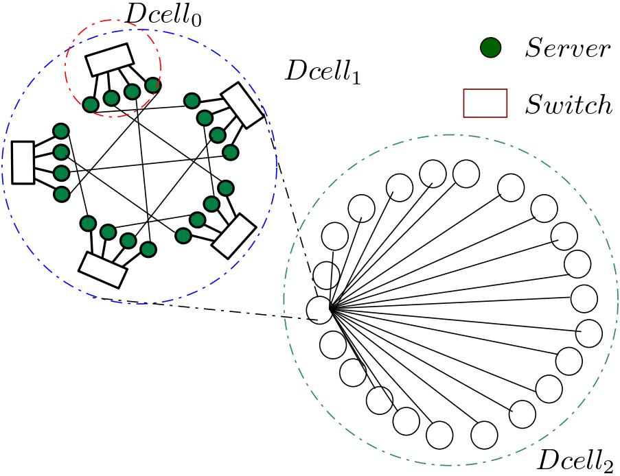
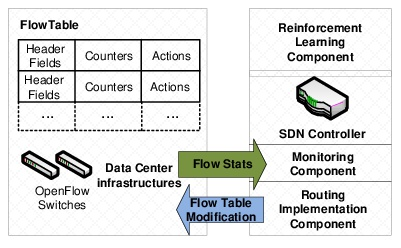
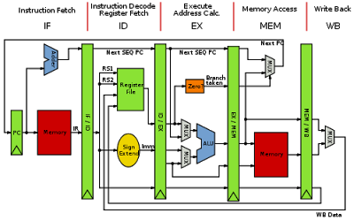
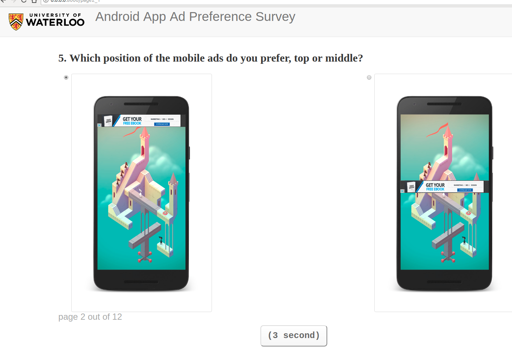
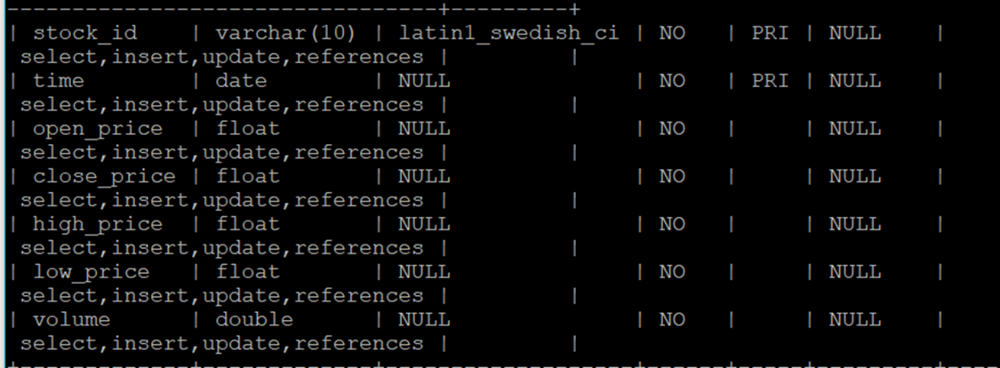

Hi, welcome to Yin(Irene) Lin’s website. I am now an undergraduate at Department of Computer Science, Shanghai Jiao Tong University (SJTU). My research topic revolves around big data management and distributed systems. I am a member of Data Communication and Engineering Lab(DCE) at the Department of Computer Science, Shanghai Jiao Tong University under the supervision of Associate Professor Dr. Gao Xiaofeng. This summer I worked as a Research Intern in the University of Waterloo. My advisor is Dr. Meiyappan Nagappan.
*This year, I will apply for 2019 Fall CS graduate programs on data systems, including database, datacenters, networking, etc.
*You can know more about my personal interests in my photo site.
(Accepted by) International Conference on Database and Expert Systems Applications(DEXA), 2018
Index plays a very important role in cloud storage systems, which can support efficient querying tasks for data-intensive applications. However, most of existing indexing schemes for data centers focus on one specific topology and cannot be migrated directly to the other networks. In this paper, based on the observation that server-centric data center networks (DCNs) are recursively defined, we propose pattern vector, which can formulate the server-centric topologies more generally. The design of R2-Tree has local R-Trees to support point, range, KNN queries and a global index layer above the structured overlay. To show the efficiency of R2 -Tree, we start from a case study for two-dimensional data. We use a layered global index to reduce the query scale by hierarchy and design a method called Mutex Particle Function (MPF) to determine the potential indexing range. Then, we extend R2 -Tree indexing scheme to handle high-dimensional data query efficiently based on the topology feature. Finally, we demonstrate the superior performance of R2 -Tree in three typical server-centric DCNs on Amazon’s EC2 platform and validate its efficiency.
(Under Review) IEEE International Conference on Computer Communications(INFOCOM), 2019
In this paper, we present MetisRL, a dynamic flow scheduling system combining the centralized SDN controller and reinforcement learning prediction to balance the network traffic and avoid collisions and congestions. From its global view of the whole network, SDN controller in MetisRL gathers historical traffic matrixes and monitors the link utilization. Then, reinforcement learning component in SDN controller uses these information to perform dynamic prediction and output flow scheduling decisions accordingly. Finally, the implementation of routing protocol is allocated from SDN’s control plane to the data plane via SDN controller. We implemented MetisRL in Fat-tree data center network on emulated Mininet testbed.We evaluate the performance of MetisRL with benchmark tests and compare it with traditional flow scheduling schemes. We show practically and theoretically that MetisRL performs well in balancing the flow in multiple paths and can efficiently avoid traffic congestions.
Computer Science, School of Electronic Information and Electrical Engineering. ( CS ) GPA:3.84/4.3, 89.38/100
David R. Cheriton School of Computer ScienceSupervisor:Dr. Meiyappan Nagappan
Teaching Assistant for CS 499, Mathematical Foundations of Computer Science (Spring 2018), Shanghai Jiao Tong University
|  |
R2-Tree data center indexing scheme
|
|  |
MetisRL: a reinforcement learning data center flow scheduling scheme
|
|  |
Computer System projects
|
|  |
A/B testing about Users' Preference of Mobile Ads Usage
|
|  |
Stock Investment Prediction Using Decision Tree
|
|
Android applications
|
Mathematical Contest In Modeling, Meritorious Winner ( top 10% worldwide)
Chun Tsung Scholar from Shanghai Jiao Tong University ( top 50 in SJTU)
Academic Scholarship from Shanghai Jiao Tong University ( roughly top 10% ), 2016-2018
SCSK Corporation Scholarship (3/139 in CS department, SJTU)
Huawei Scholarship (7/149 in CS department, SJTU)
Yitu Scholarship (4/149 in CS department, SJTU)
Fudan Hackathon top 7 award